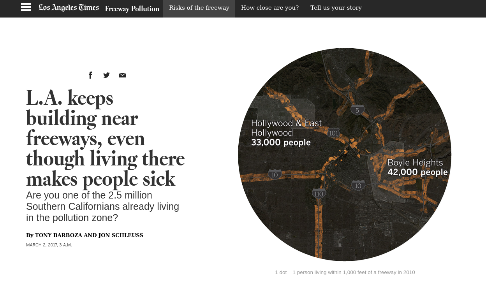
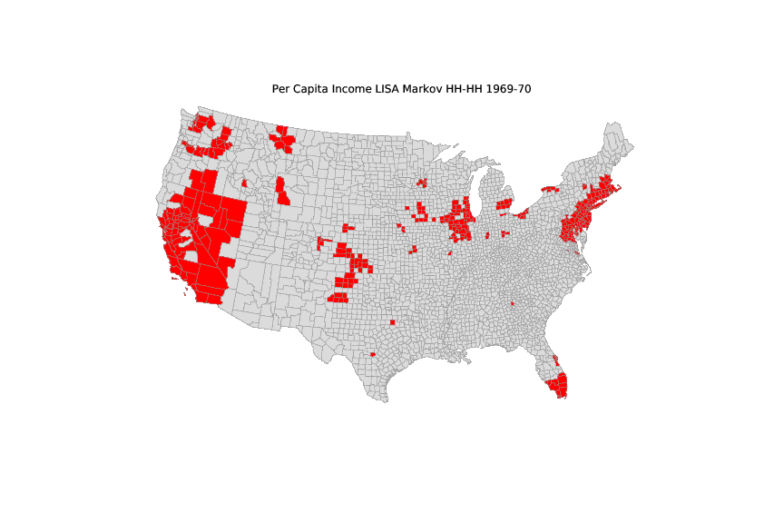
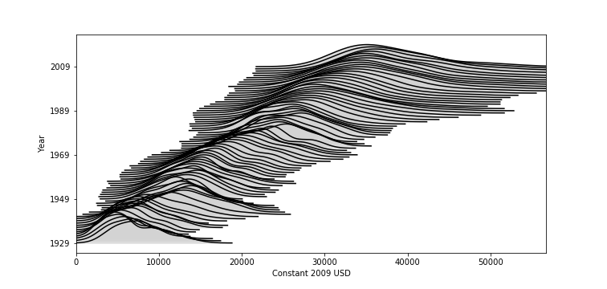
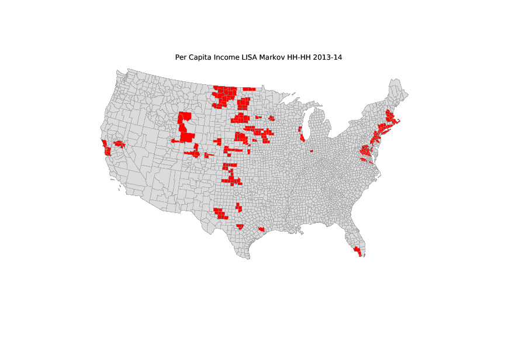

Geographic Information Systems for Public Policy - Lecture I
Introduction
Sergio Rey
Today
- This course
- Introduction to GIS
- GIS and Public Policy
This course
Overview
This course introduces the fundamental concepts of geographic information systems (GIS), geographic information science (GIScience), spatial data, and applications of spatial analysis in the social sciences and public policy.
Overview
In the scope of a 10-week quarter course we can only introduce a handful of the key concepts and methods relevant to GIS for Public Policy. As such, the course is not intended as an exhaustive treatment. Instead, the goal is that students will acquire an understanding of the more common and useful methods and practices, and use the course as an entry point for further engagement with the field.
Focus
- Spatial thinking
- Spatial skills
Spatial Thinking
Early Spatial Analysis
[source]
Spatial Thinking is Important
[source]
Course Objectives
At the end of this course students will:
- possess a sound understanding of fundamental spatial concepts and theory;
- know how to locate, import, manipulate, display, and analyze geographical data in open source computational tools;
- have the ability to apply GIScience concepts and methods in public policy and social science research.
Computational Learning
- We will using open source geospatial software throughout the course, primarily QGIS
- No prior programming experience is assumed and all computational concepts are presented in a self-contained manner
- All software for the course will be made available through lab computers. Students are strongly encouraged to install these packages on their personal computers to facilitate working outside of the meeting times.
Course Structure
- We will meet Mondays and Wednesdays.
- First part of the meeting will be in lecture format where we cover core GIS concepts and theory.
- Second part of the meeting will be more hands on where we explore GIS software to engage with the core concepts introduced in part one.
Grading
| Component | Points |
|---|---|
| Exercise 1 | 15 |
| Exercise 2 | 15 |
| Exercise 3 | 15 |
| Exercise 4 | 15 |
| Midterm exam | 10 |
| Final exam | 20 |
| Collaboration | 10 |
Exercises
- Four exercises will be introduced in class and are to be completed outside of meeting times.
- Collaboration on exercises is encouraged with the understanding that you alone are responsible for mastering the material
- Collaboration is not allowed on the examinations
- Material from the exercises will form the bases of some examination questions
Exams
- Exams will be given in-class and are closed-book
- Reviews will be held during the meeting prior to the exam
- The final exam will be cumulative
- Makeups for exams will be given in cases of unforeseen emergencies
- Makeups will consist of a 1-hour oral examination
Collaboration
You have the opportunity to earn a total of 10 collaboration points. Collaboration here means you make a contribution that improves the course experience for all.
Points can be earned for the following contributions:
- An approved review question (1 pt)
- An approved answer to a review question (1 pt)
Review Questions
Can be submitted anytime up to 2 weeks before the midterm or final
Must be submitted through piazza
Have to be approved by the professor for credit
Schedule
Code of Conduct
As course instructor, I am dedicated to providing a harassment-free learning experience for all students, regardless of gender, sexual orientation, disability, physical appearance, body size, race, religion, or choice of operating system. All course participants are expected to show respect and courtesy to other students throughout the semester. As a learning community we do not tolerate harassment of participants in any form.
Code of Conduct
- All communication should be appropriate for a professional audience including people of many different backgrounds. Sexual language and imagery are not appropriate in this course.
- Be kind to others. Do not insult or put down other students. Behave professionally. Remember that harassment and sexist, racist, or exclusionary jokes are not appropriate for PBPL273.
- Students violating these rules may be asked to leave the course, and their violations will be reported to the UCR administration.
This code of conduct is an adaptation of the SciPy 2018 Code of Conduct.
Introduction to GIS
Geographic Information Systems
- Geographic: relates to a specific place on or in relation to the Earth’s surface
- Information: data to which some value or interpretation has been added
- Systems: a system designed to perform a wide range of function on and with GI
-
Acronym:
GISystems
Geographic Information Science
- The science behind GISystems
- Coined by Michael Goodchild in 1992
-
Acronym:
GIScience
GIS and Public Policy
Positive Applications of GIS
- applications of GIS to examine a phenomena
- provide scientific evidence and knowledge
- describe the world
Environmental Equity

Land Use Dynamics
[source]
Spatial Criminology
Neighborhood Dynamics
[source]
Segregation
[source]
Spatial Inequality
|  |  |  |
Normative Applications of GIS
- Prescriptive
- change the world
Urban Planning
[source]
Transportation
[source]
Disaster Response
[source]
Homelessness
[source]
Opioid Epidemic
[source]
Introductions
You
Take a few minutes and let us know a bit about yourself
- Name
- Program/Concentration
- Why you are here
Instructor
My Program
Why am I here
‘Trump turned this place into a ghost town’
Next Up
- Introduction to QGIS
- Bring your flash drives!

GIS for Public Policy’20 by Sergio Rey is licensed under a Creative Commons Attribution-ShareAlike 4.0 International License.